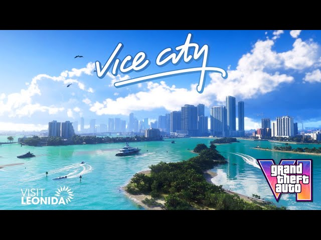
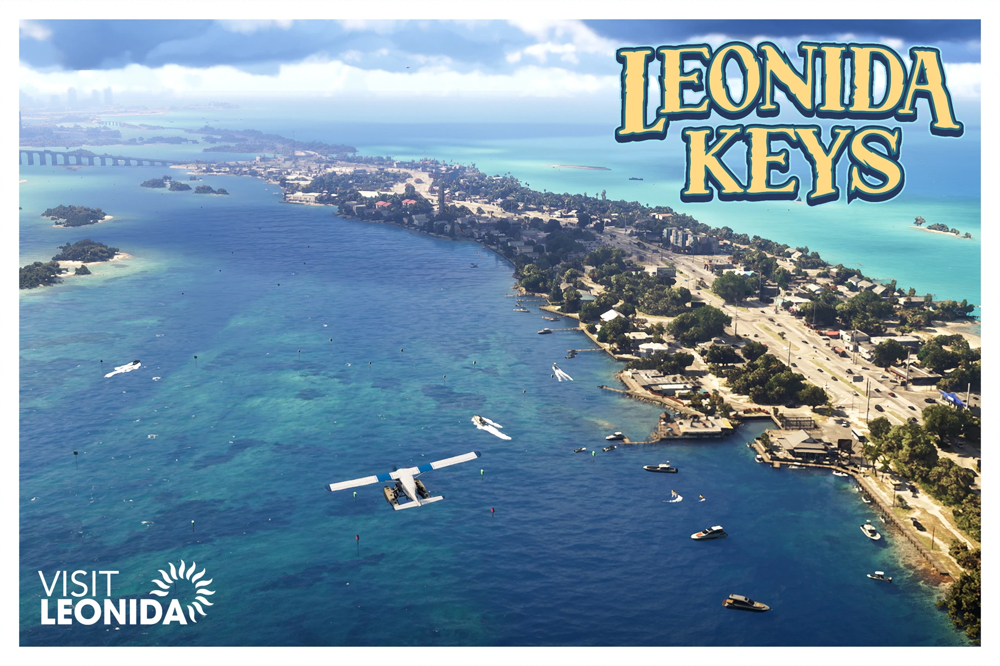
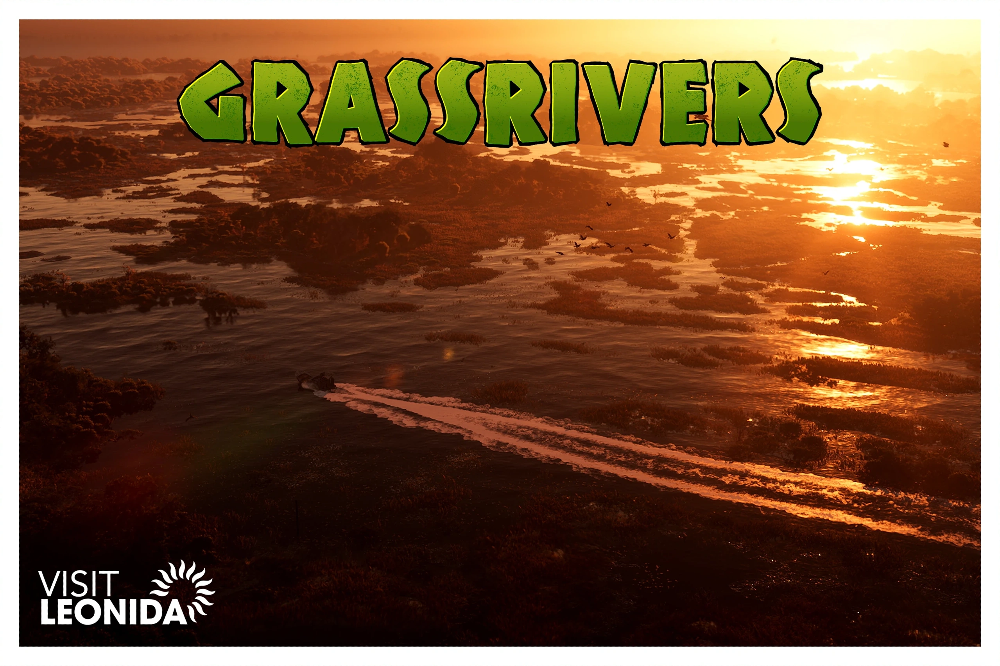
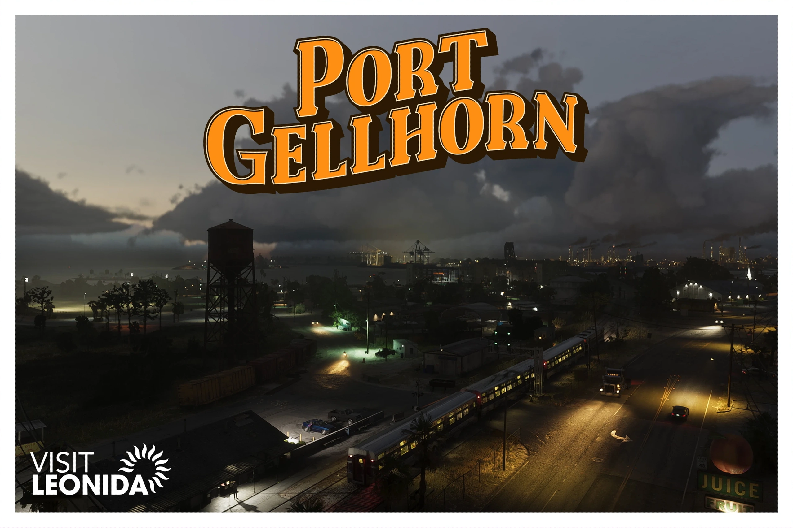
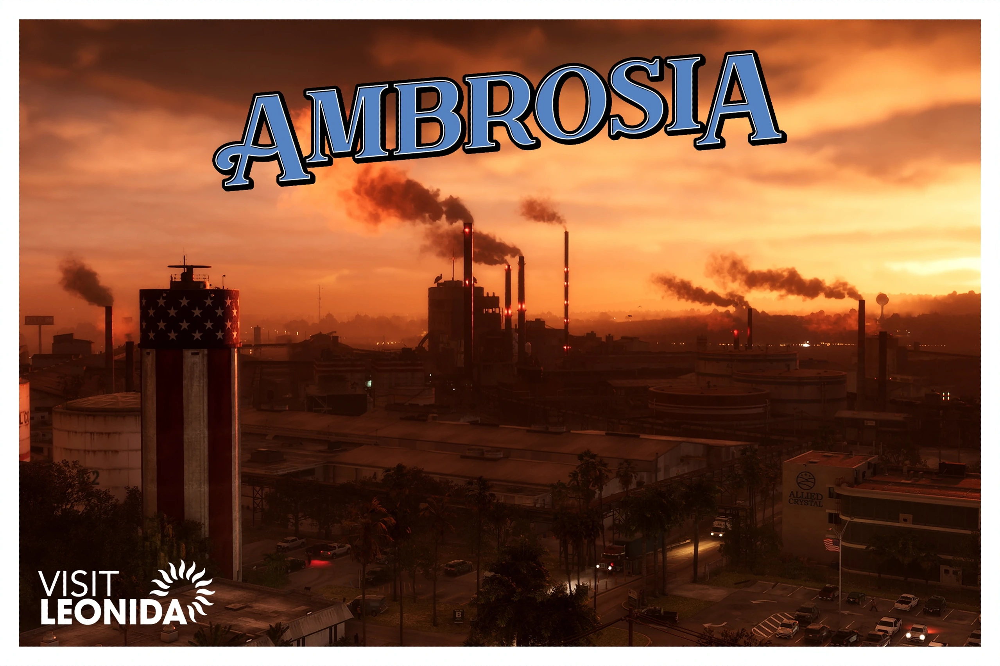
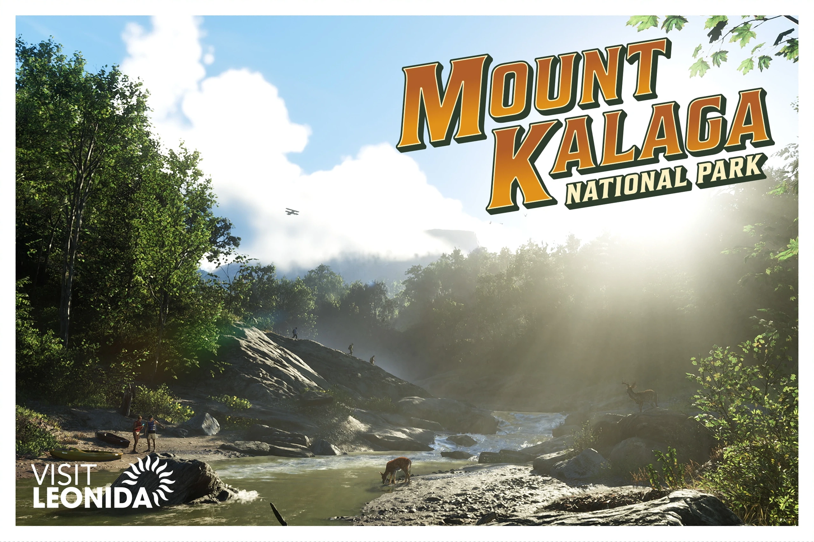

VICE CITY: TUDO EM EXCESSO
Estamos muito longe dos anos 80, mas Vice City ainda é a capital do sol e da diversão da América.
O glamour, a agitação e a ganância da América capturados em uma única cidade. Cada bairro tem algo a oferecer, desde os hotéis art déco em tons pastel e as areias brancas e brilhantes de Ocean Beach, até as movimentadas padarias de Little Cuba e as marcas clandestinas do mercado de pulgas Tisha-Wocka, chegando ao Porto de Vancouver, a capital mundial dos cruzeiros.

LEONIDA KEYS: PORTAL PARA O PARAÍSO
O código de vestimenta é casual, os bares são bem servidos.
A vida neste arquipélago tropical não é glamorosa, mas é fácil. Relaxe, sente-se numa cadeira de praia, mas cuidado — você está bem perto de algumas das águas mais belas e perigosas de toda a América.

GRASSRIVERS Bem-vindos aos pântanos
A joia indomável da coroa de Leonida.
Você nunca sabe o que se esconde sob a superfície dessa vasta extensão primordial. Os jacarés podem ser a atração mais famosa, mas existem predadores muito mais mortais e descobertas mais estranhas entre os manguezais.

PORT GELLHORN Live Hard
A costa esquecida de Leonida
Hotéis baratos, atrações fechadas e centros comerciais vazios não trarão os turistas de volta, mas há uma nova economia neste local que antes era um destino turístico popular. Ela é impulsionada por bebidas alcoólicas baratas, analgésicos e energéticos de postos de gasolina. Suba numa moto de trilha e segure bem a carteira.

AMBROSIA Mantendo Leonida Doce
A batalha pela saúde e riqueza de Leonida começa aqui.
No coração de Leonida, a indústria americana e os valores tradicionais ainda reinam absolutos — custe o que custar. A refinaria de açúcar Allied Crystal fornece os empregos, enquanto a gangue de motoqueiros local fornece quase tudo o resto.

MONTE KALAGA País selvagem e selvagem
Espaço para respirar nas fronteiras do norte do estado.
Monumento nacional situado junto à fronteira norte do estado, o Monte Kalaga oferece excelentes oportunidades para caça, pesca e trilhas off-road. Nos exuberantes bosques ao redor, místicos caipiras e radicais paranoicos vivem longe dos olhares curiosos do governo.